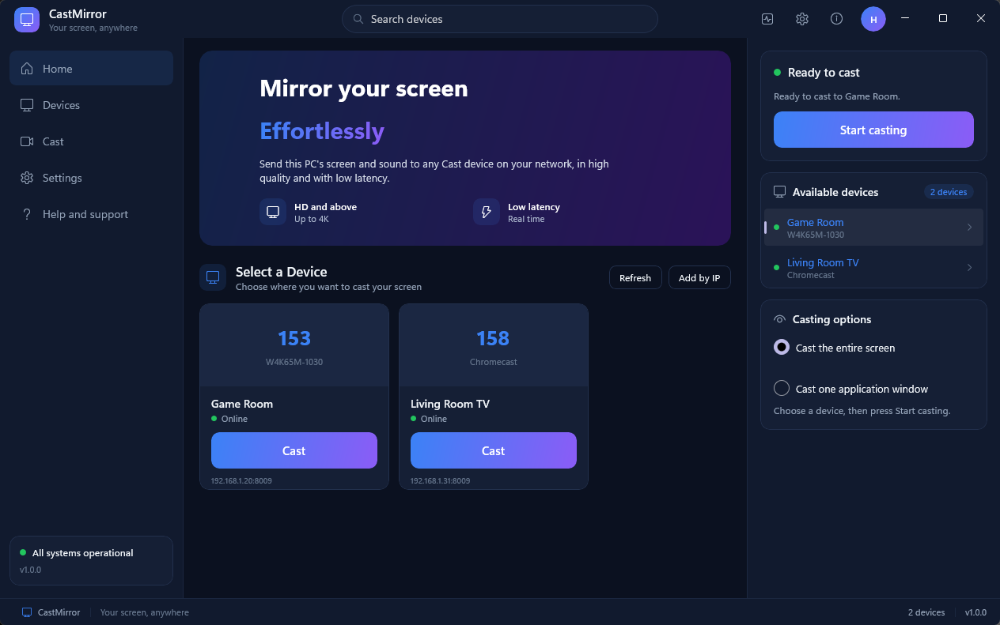
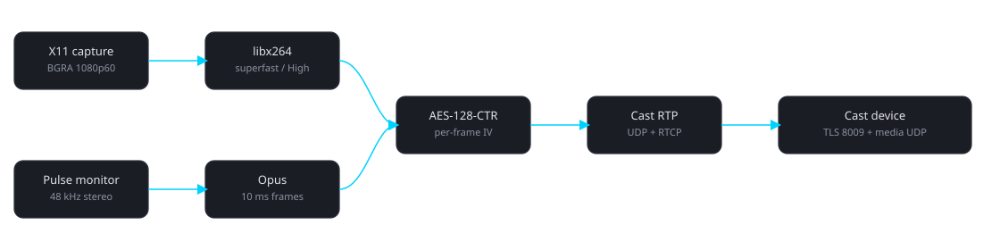

Mirror your PC to a Chromecast or Google TV. No Chrome.
CastMirror finds Cast devices on your network, captures your whole screen or a single window with its sound, and streams H.264 and Opus over the same encrypted Cast RTP path Chrome uses. The Windows app is the main product; Linux has its own packages.
⏱️ ~200 ms Target Playout🧪 230 Test Cases⚡ GPU H.264 encode

Windows: pick a TV, choose the entire screen or one window, and press Start casting.
Download
Version 1.0.0
Windows and Linux ship as separate releases. Every file has a checksum in the same release.
🪟
Windows 10 2004 or later, 64-bit
The installer adds a Start menu entry and Windows Firewall rules for private and domain networks. A portable zip is also there. The binaries are not code-signed yet, so SmartScreen warns on first run: choose More info, then Run anyway.
A .deb for Debian and Ubuntu and an .rpm for Fedora, with the GTK 4 app and the command-line tool. X11, and Wayland through the desktop portal. The Windows app gets more testing than this one.
CastMirror speaks the Cast protocol directly: TLS on port 8009 for control and encrypted RTP over UDP for the picture and sound. It does not run a browser.
📺
One-Click Cast & Discovery
Finds Chromecasts, Google TV devices and Cast TVs over mDNS. If your router blocks mDNS, an opt-in subnet scan or Add by IP still works. A TV that goes off the network drops out of the list.
🖥️
Screen & Window Sharing
Share a whole display or one window. On Windows, window sharing uses Windows.Graphics.Capture, so a window in front of the shared one stays out of the picture. You can also share the sound of one app instead of the whole PC. On Linux: X11, and the Wayland portal picker.
📈
Live stats
Frame rate, bitrate, round-trip time and packet loss update while you cast, with a plain-language hint when the Wi-Fi is dropping packets.
🎬
Freeze and mute
Freeze the picture or mute the TV without ending the cast. Global shortcuts (Ctrl+Alt+C, F and M) work from any app on Windows.
🔄
Adaptive bitrate
An eight-step ladder lowers resolution, frame rate and bitrate when packets are lost and climbs back when the link recovers. After a dropped connection, a sleep or a Wi-Fi change it reconnects for as long as you allow.
🛠️
Diagnostics and privacy
Copy a bug report from the Logs window with the last part of every IP address masked. A crash saves a memory dump on your PC and nothing is uploaded. There is no telemetry and no account.
Architecture
Native Capture to Cast UDP Pipeline
Cast keeps a playout buffer, so expect about 150 to 400 ms of delay depending on the preset (200 ms by default). Desktop pixels and system audio (WASAPI loopback on Windows, PulseAudio or PipeWire on Linux) are encoded, encrypted with a per-session AES-128-CTR key, and packetized into Cast RTP over UDP.

Hardware Matrix
Cast video devices Chrome can mirror to
The limits CastMirror applies per device class, from its capability model. They are predictions, not measurements: the rows in the device matrix predate 1.0.0 and were not re-measured for it.
All project documentation open on the website, migrated directly from the source repository.
1. Install and build
Guide
Windows
Install the app from the Windows release, or build it. Building needs MSYS2 (UCRT64) with GCC, CMake, Ninja, protobuf, OpenSSL, Opus, FFmpeg, nlohmann-json and libx264, plus the .NET 8 SDK for the WinUI app. The full package list is in docs/building.md.
build-all.bat :: native core + WinUI app
package.ps1 :: self-contained publish, licence and package checks
scripts\run_ubsan.ps1 :: test suite under UBSan (needs clang)
scripts\soak_windows.ps1 -Minutes 10 :: memory and handle soak
Windows needs 10 version 2004 or later, 64-bit. Control traffic uses TCP 8009 and media uses UDP, so the installer adds Firewall rules for private and domain networks; scripts\setup_firewall.ps1 does the same for the portable zip.
Linux
Install the Linux release packages, or build from source. You need a C++20 compiler (GCC 11+ or Clang 14+), CMake 3.20+, Ninja, and developer libraries for GTK 4, Libadwaita, FFmpeg, and PulseAudio.
Modern GTK 4 + Libadwaita desktop graphical application
build/app/castmirror
Interactive and non-interactive command-line interface
build/tests/castmirror_tests
Full Google Test test suite (230 tests)
build/tools/poc-*
Protocol, encoding, and transport benchmark tools
build/tools/fake-receiver
Automated simulated Cast receiver for local loopback verification
Running the GUI and CLI
# Launch the GTK 4 desktop app
./build/app/castmirror-gui
# Cast a full monitor via CLI
./build/app/castmirror --device 192.168.0.164 --display 0 --preset High
# List available application windows, then mirror one
./build/app/castmirror --list-windows
./build/app/castmirror --device 192.168.0.164 --window 0x2400004
# Cast display without mirroring system audio
./build/app/castmirror --device 192.168.0.164 --no-audio
Environment variables
CASTMIRROR_FORCE_SOFTWARE_ENCODE=1: Force FFmpeg libx264 software encoding even when VAAPI GPU acceleration is available.
CASTMIRROR_FORCE_X11=1: Force X11 display capture instead of the PipeWire portal when running under a Wayland compositor via XWayland.
Network and firewall (Linux)
Control traffic uses TCP 8009 (TLS) to the receiver. Media streams use UDP to the ephemeral port returned in the ANSWER. Both devices must be on the same local subnet. Helper script: scripts/setup_firewall.sh.
2. System Architecture & Design
Architecture
CastMirror is a C++20 engine (castcore) with a C API (ABI version 3) and three front ends: the WinUI 3 app (app/winui, .NET 8) on Windows, and a GTK 4 + Libadwaita app (app/gui) and CLI (app/cli) on Linux. The Windows app calls the engine through P/Invoke and checks the ABI version at start-up.
Performance & Latency Contract
Connect to First Frame: ≤ 8 seconds typical (including TLS, app launch, and OFFER/ANSWER negotiation).
Glass-to-Glass Latency: ~200 ms typical on a clean 5 GHz LAN at the default targetDelay: 200. The value stays in a 150–400 ms band (Game starts at 150 ms, Cinema at 400 ms) and the adaptive controller steps it 150→200→300→400 ms under loss/jitter and back down when clean. Chrome's own default is 400 ms.
Teardown Budget: Clean Stop within ≤ 500 ms (guaranteed halt of capture, encoders, and UDP sockets).
Idle Safety: Capture and encoders never run in the background when disconnected.
Media Pipeline
Video path (Windows): DXGI Desktop Duplication for a display, or Windows.Graphics.Capture for a window → conversion to BGRA (HDR and 10-bit surfaces tone-mapped to SDR) → frame pacer (steady 30 or 60 fps) → BT.709 limited-range conversion → Media Foundation H.264 (asynchronous hardware transforms supported, x264 fallback) → FrameCrypto → RtpPacketizer → paced UDP.
Audio path (Windows): WASAPI loopback of the default speakers, or of one app through process loopback (Windows 10 2004+) → folded to 48 kHz stereo → Opus → FrameCrypto → RtpPacketizer → UDP. Capture follows the default device when it changes.
Audio path (Linux): PulseAudio / PipeWire default sink monitor → PCM 48 kHz stereo (10 ms chunks) → Opus encoder (192 kbps) → FrameCrypto → RtpPacketizer → UDP. Host audio sink is muted during streaming and restored on Stop.
State Machine
All subsystems coordinate strictly through an explicit thread-safe state machine:
Idle → Discovering → Ready → Connecting → Negotiating → Streaming ↔ Reconnecting → Stopping → Idle
(Failed state transitions gracefully back to Idle or Reconnecting)
Module Boundaries
Module
Responsibilities
DeviceDiscovery
mDNS _googlecast._tcp browsing + local subnet TCP port 8009 scan; drops devices after ten minutes of silence
CastChannel
TLS 1.2/1.3 Cast V2 socket on port 8009, Protobuf packet framing, PING/PONG heartbeats
8-rung dynamic adaptation ladder tracking packet loss, RTT, and jitter
3. Device Compatibility & Adaptation Ladder
Matrix
CastMirror classifies receivers by model name: CapabilityModel::Evaluate lowercases the mDNS md value and substring-matches it. The mDNS ca capability bitmask is parsed into CastDevice::capabilities but no classifier consumes it.
Receiver Compatibility Matrix
Device family (as classified)
Matched md substring
H.264 Level
Max Resolution & FPS
Max Bitrate
Nest Hub
nest hub, google home hub
Level 3.1
1280x720 @ 60
5000 kbps
Chromecast Ultra
ultra
Level 5.1
3840x2160 @ 60
25000 kbps
Chromecast Gen 1/2
h2g2-42, nc2-6a5 (not nc2-6a5-d)
Level 4.1
1920x1080 @ 30
8000 kbps
Chromecast with Google TV
google tv, streamer, android tv, bravia
Level 5.1
3840x2160 @ 60
25000 kbps
Chromecast Gen 3
chromecast
Level 4.2
1920x1080 @ 60
15000 kbps
Generic Cast TV
anything else
Level 4.2
1920x1080 @ 60
12000 kbps
8-Rung Dynamic Adaptation Ladder
Defined once in AdaptiveController::BuildLadder() (core/src/adaptive_controller.cc) — each rung is only a resolution, a framerate and a target bitrate; there is no per-rung min/max bitrate and no RTT-threshold table.
Rung
Resolution
FPS
Target Bitrate
0 (4K60)
3840 × 2160
60
25.0 Mbps
1 (4K30)
3840 × 2160
30
16.0 Mbps
2 (1440p60)
2560 × 1440
60
12.0 Mbps
3 (1080p60)
1920 × 1080
60
8.0 Mbps
4 (1080p30)
1920 × 1080
30
5.0 Mbps
5 (720p60)
1280 × 720
60
3.5 Mbps
6 (720p30)
1280 × 720
30
2.0 Mbps
7 (540p30)
960 × 540
30
1.2 Mbps
4. Cast Streaming Protocol Specification
Protocol
Google Cast screen mirroring uses a specialized real-time media protocol (not WebRTC ICE/DTLS and not HLS media playback).
1. Control Plane (Cast V2 TLS :8009)
Connection: OpenSSL TLS connection to device port 8009.
Protobuf Frame: 4-byte big-endian length prefix followed by serialized CastMessage.
Loss bitmasks (NACK / CST2) detailing dropped UDP packets for immediate retransmit.
Picture Loss Indicators (PLI) signaling decoder desync and requesting an immediate IDR keyframe.
5. Test & Verification Report
Verification
The suite covers unit tests, integration tests, network impairments and a simulated receiver that speaks TLS and Cast RTP over loopback. CI runs it on Windows and on Ubuntu (Release, ASan and UBSan, TSan) and Fedora.
Test Suite Status (230 cases; generated by scripts/count_tests.py)
Test source
Test Count
Status
Coverage
test_state_machine.cc
6 tests
Passed
State transitions, callback notification, retry limits
test_config.cc
3 tests
Passed
Defaults, save/load round-trip
test_capability_model.cc
5 tests
Passed
Model classification, preset recommendations, capture-fps passthrough
test_offer_answer.cc
5 tests
Passed
OFFER JSON, ANSWER parsing, custom audio bitrate, status query
10 ms cadence, monotonic timestamps, join-or-detach worker cleanup
test_wgc_window_source.cc
5 tests
Passed
Total
230
Passed
29 files registered in tests/CMakeLists.txt
Budgets the tests check
Metric
Budget
How it is checked
Stop latency
≤ 500 ms
The end-to-end test stops a live stream against the simulated receiver and asserts the budget.
Memory and handles over time
Working set within 64 MB and handles within 40 of the baseline
The soak test streams a 1080p desktop for 10 minutes on Windows (scripts/soak_windows.ps1). The last run stayed within 12 MB and 6 handles.
Undefined behaviour
None
The suite runs under UBSan in trap mode on Windows, and the RTCP and mDNS parsers are mutation-fuzzed.
These are simulated-receiver and single-machine results. They are not measurements on real TVs; see the device matrix.
6. Physical Device Matrix
Hardware
Firmware, resolution and frame-rate ceilings, codecs and playout delay per receiver generation live in the source document. Its rows predate 1.0.0 and were not re-measured for it, so treat them as unverified: docs/DEVICE_MATRIX.md.
Playout delay bounds
Minimum target playout delay the sender will request: 150 ms.
Default target delay: 200 ms (Auto / High / Balanced / Smooth).
Maximum: 400 ms — the Cinema preset starts there and Game starts at 150 ms; the controller clamps every value to the 150–400 ms range.
The delay is adapted at runtime: AdaptiveController::StepUpPlayoutDelay walks 150→200→300→400 ms when jitter exceeds 30 ms or loss exceeds 3%, and StepDownPlayoutDelay walks back after 15 consecutive clean intervals.
Keyframe cadence & crypto
2000 ms periodic intra-refresh, or an IDR on packet-loss bursts.
OpenSSL AES-128-CTR, hardware-accelerated via AES-NI / ARMv8 Crypto Extensions.